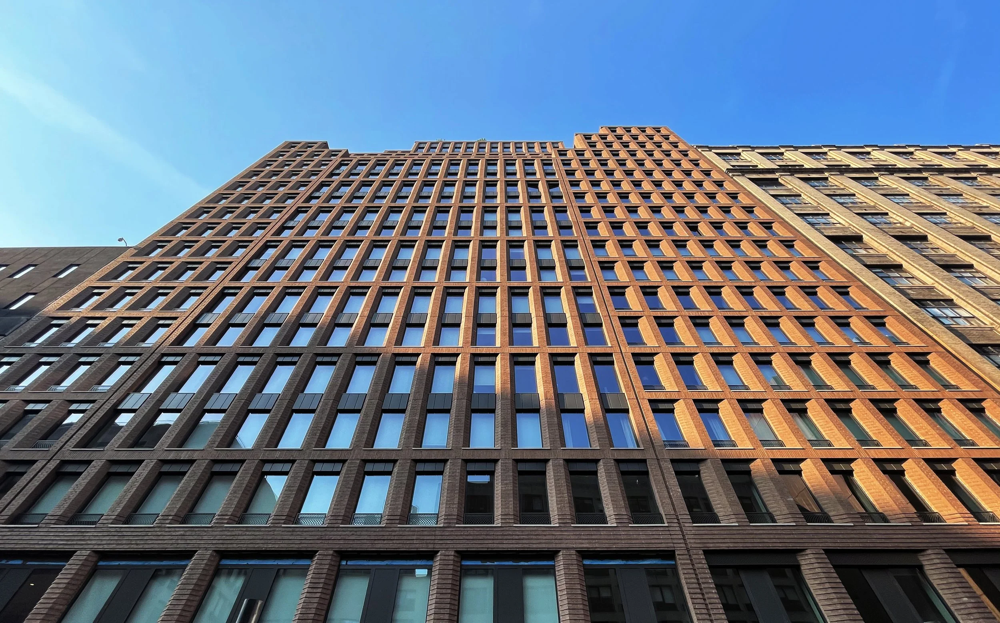

Architects & Engineers
Design professionals & PEs
NYC Filing Workflow Intelligence
D.A. BluePrint Technologies helps architects, engineers, expediters, and construction teams improve filing accuracy, reduce preparation inefficiencies, and streamline NYC job submission workflows.
See D.A. BluePrint in action. Book a 30-minute session to explore how we can improve your team's filing operations.
Book DemoBuilt for Filing Operations
Design professionals & PEs
Filing & submission specialists
Site & project field teams
Owners, operators & asset teams
Filing Workflow Intelligence
D.A. BluePrint Technologies provides workflow intelligence tools that help architecture, engineering, construction, and filing professionals reduce filing preparation time, improve submission accuracy, and streamline NYC job filing operations from pre-planning through submission readiness.
Filing Intelligence
Identify potential filing issues before submission preparation begins. Reduce surprises and improve team readiness across alteration and new job filings.
Explore →Document Guidance
Review job information against workflow logic and NYC filing requirements. Surface gaps in documentation before submission to reduce rejections and rework.
Explore →
Operational Visibility
Track filing status, documentation completeness, and submission readiness across active projects and job types through a single operational layer.
Explore →Platform Intelligence
D.A. BluePrint Technologies connects project intake, document review, filing validation, and submission guidance so teams can prepare and file with greater accuracy and efficiency.
Capture project details, filing type, documentation, and initial requirements from the team to establish a structured workflow baseline.
Identify potential filing issues before submission preparation begins. Reduce surprises and improve team readiness across all filing types.
Review job information against workflow logic and NYC filing requirements to surface documentation gaps before submission.
Receive structured next steps to reduce errors, rework, and submission delays across alteration, new building, and permit filings.
Organize project documentation, job information, and filing requirements so teams can prepare submissions with accuracy and confidence.
Reduce manual coordination across intake, review, document compilation, and submission workflows for architects, engineers, and expediters.
Create visibility into filing status, documentation gaps, team workload, and project submission readiness across active NYC job filings.
Client Outcomes
Teams access clearer filing requirements, document checklists, and submission guidance without relying on fragmented reference materials.
Filing validation helps surface documentation gaps and workflow issues before submission, reducing rejections and correction cycles.
Workflow intelligence helps reduce repetitive coordination, manual tracking, and internal back-and-forth across filing teams.
Leadership and project coordinators gain better visibility into filing status, documentation readiness, and submission timelines.
Company
D.A. BluePrint Technologies is focused on building the intelligence layer that architecture, engineering, construction, and filing professionals need to operate with better data, efficient workflows, and stronger submission guidance across NYC job filings.
About D.A. BluePrintBecome a Client
Partner with D.A. BluePrint Technologies and bring structured workflow intelligence to your NYC filing operations. Join architecture firms, engineers, and construction teams that trust us to streamline their submission processes.